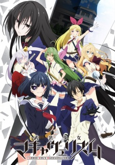

Busou Shoujo Machiavellianism information
-

Busou Shoujo Machiavellianism
Other name: Armed Girl's Machiavellism; 武装少女マキャヴェリズム
Studios: Silver Link, Connect
Date aired: Apr 05, 2017 - Jun 21, 2017
Status: Completed Views: 3,367,601
Duration: 23 min/episode Quality: HD
Summary:
The Private Aichi Symbiosis Academy was originally a high school for high-class girls. When it became co-ed, the girls, out of fear, asked to be permitted to bring weapons to school. When that was enforced, a five-member vigilante corps-like organization called the "Supreme Five Swords" was also formed. After many generations, the five swords eventually became a group which corrected problematic students, and the academy started proactively accepting such students in order to correct them.Nomura Fudou was sent to this school after being part of a huge brawl. What will he do when the only options he has after enrolling are being expelled from that school or being corrected the way the rest of the male students there were ...by being forced to dress and act like a girl!
Episodes
- Busou Shoujo Machiavellianism Episode 0126/23/2017
- Busou Shoujo Machiavellianism Episode 0116/14/2017
- Busou Shoujo Machiavellianism Episode 0106/8/2017
- Busou Shoujo Machiavellianism Episode 0095/31/2017
- Busou Shoujo Machiavellianism Episode 0085/24/2017
- Busou Shoujo Machiavellianism Episode 0075/17/2017
- Busou Shoujo Machiavellianism Episode 0065/10/2017
- Busou Shoujo Machiavellianism Episode 0055/3/2017
- Busou Shoujo Machiavellianism Episode 0044/26/2017
- Busou Shoujo Machiavellianism Episode 0034/19/2017
- Busou Shoujo Machiavellianism Episode 0024/12/2017
- Busou Shoujo Machiavellianism Episode 0014/5/2017